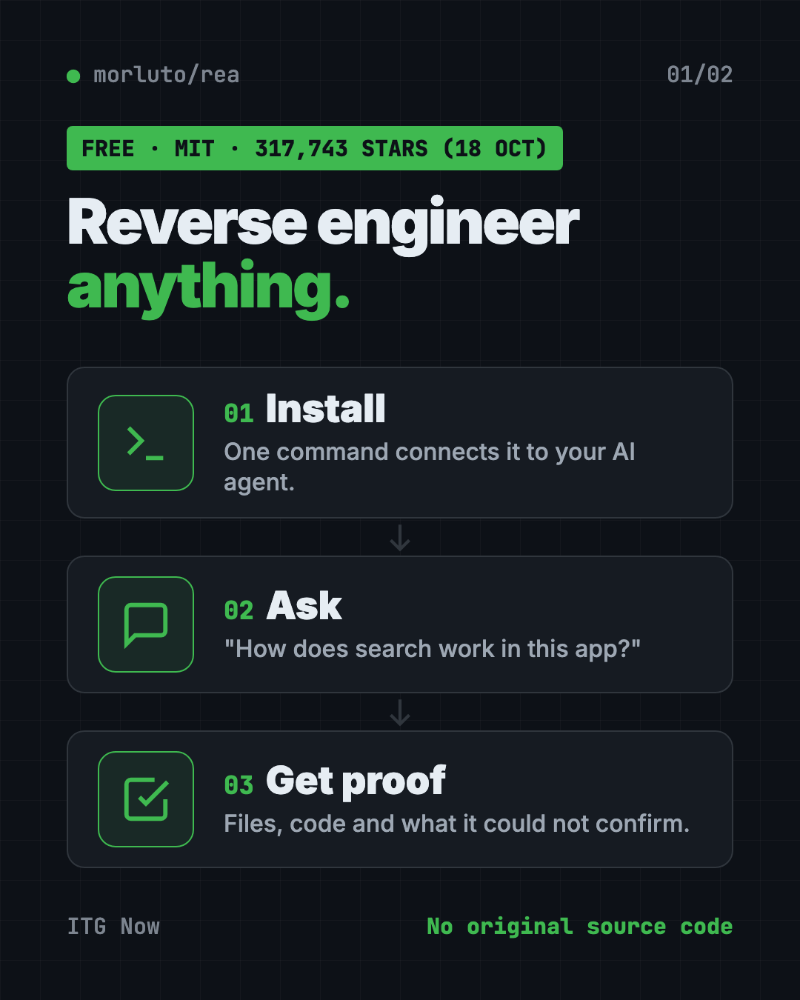
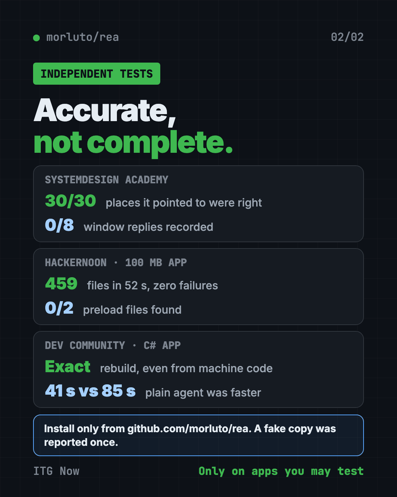

REA: Reverse Engineer Anything With Your AI Agent (2026)
- Published 18 Oct 2026
- 8 min read
- License MIT
- By the ITG Now team
REA, short for Reverse Engineer Anything, is a free tool that lets your AI coding agent look inside an app you don't have the code for. It explains how a feature works, shows the proof, and can help you build your own version.
It hit #1 on Trendshift's trending list on October 5 and had 317,743 GitHub stars on October 18, 2026. Here's what it really does, what independent testers found, and the risks you should know before you install it.
Key takeaways
- Free and open source. MIT license. It works with Claude Code, Codex, Cursor, Gemini CLI and other agents.
- Not a magic copy button. It returns pseudocode, assembly and maps of an app's parts, not the original source code (README FAQ).
- A wrapper, not a new engine. It drives existing tools like Ghidra, Hopper, IDA and JADX, plus built-in readers for JavaScript and .NET apps.
- Independent tests are mixed. Accurate where it points, but it misses things, and a plain AI agent was sometimes faster.
- Watch for fakes. One user reported a fake copy on GitHub (issue #2424) whose Windows download Microsoft Defender flagged as a trojan. Install only from the official sources.

What is REA?
REA (Reverse Engineer Anything) is an add-on for AI coding agents. In tech terms it's an MCP server plus a command line tool. MCP is the plug that lets an AI agent use outside tools.
You point your agent at an app on your computer. REA reads the app's files, finds the parts that matter, and hands the agent evidence: file names, byte ranges, code snippets and a list of what it could not confirm.
The goal is understanding, not stealing. You learn how a feature works, then build your own version.
How does REA work?
There are three steps, and the agent does most of the work.
- Install it with one command. Setup connects REA to your agent. It shows each change before it writes it.
- Ask in plain words. For example: "Understand how search works in this notes app, show me the evidence, and build a similar feature."
- Get findings with proof. The agent explains the feature or writes and tests its own version.
Some apps need extra tools. Native programs like .exe files and Mac apps need Hopper, Ghidra or IDA, installed and licensed by you. JavaScript and Electron apps (like many desktop apps built on web code) work with no extra tool.
What REA can't do
This part matters more than the hype.
- No original source code. You get pseudocode, assembly, maps of modules and evidence. Its disclaimer adds that source-like output gives you no rights to the original program.
- No one-click clone. Rebuilding anything takes real agent work and checking. The DX-Ball project has 55 maintained C functions so far, not a finished game.
- It can be wrong. The project's own disclaimer says results can be incomplete or wrong.
- It's heavy for agents. One tester counted 170 tools and about 1.95 MB of tool list before any work starts.
- It's not permission. Having a file does not mean you may copy it, bypass copy protection or reuse its protected code.
What people have built with REA
These come from the official showcase site and the project's community board.
- How a login code is made. It found the 6-digit code maths inside the Aegis Authenticator Android app, among 3,077 classes. Then it explained why the code changes every 30 seconds and built a browser demo.
- A security puzzle. It solved a 2023 capture-the-flag challenge (a hacking contest puzzle) by turning the checker into equations. The original program printed "Correct!"
- Old games. One fan rebuilt parts of DX-Ball, a 1996 Windows game, and Touhou 4, a PC-98 game, in readable C and C++ code, and checked them against the original game's compiled bytes.
- How copy works in Notion. It traced Notion Desktop's copy button all the way to Electron's clipboard writer.
- Checking your own website. One user pointed it at their own app to see what a stranger could find. It found a real problem, a login form served without encryption on one host, and they fixed it.
- An accounting app. One user built an open-source accounting app after studying a commercial one. They say REA helped them study the maths, but did not recover the source. Cloning a paid product like this carries legal risk.
What independent tests found
We read four outside tests. Here's what REA got right and what it missed.
| Test | Got right | Missed |
|---|---|---|
| HackerNoon (real 100 MB Electron app) | 459 files read in 52 seconds, zero parse failures; window and IPC counts matched a text search | Said 0 preload files when the app had 2; a feature trace failed on the big app |
| SystemDesign Academy (open-source Electron app) | All 30 places it pointed to were right; found a channel a text search missed | Recorded none of the 8 places where the app replies to a window |
| DEV Community (small C# app, 3 builds) | Rebuilt the app exactly, even from a machine-code build; found a hidden fake API key | The same agent without REA was faster every time: 41 seconds vs 85 with REA |
| YouTube review via daily.dev (GNOME Calculator) | Rebuilt it in Python in 28 minutes, nearly working | Minor UI bugs; the reviewer calls REA a wrapper around existing tools |
The pattern is clear. REA is accurate where it looks, but it doesn't see everything. Its claimed edge is on big native apps and checkable evidence. Small tests haven't proven that edge yet.

Is REA safe and legal?
REA itself is open source, but use it with care.
- Fake copies. One user reported a fake GitHub copy, rea-tools/rea, in issue #2424. It offered a Windows download that Microsoft Defender flagged as a trojan. Another outlet says reports conflict on whether any lookalike carried a trojan. Either way, use only github.com/morluto/rea, rea.tools and the npm package rea-agents.
- Run unknown apps in a sandbox. REA can run the app it studies with your user permissions. The docs suggest a virtual machine (a computer inside your computer) for apps you don't trust.
- Your AI sees the findings. The analysis runs on your computer, but your agent's AI model reads the results.
- The law still applies. The disclaimer says it won't help bypass copy protection, license checks, anti-cheat or logins you aren't allowed to test. Reverse engineering may be restricted by your country or the software's license.
For a broader safety check of code you write yourself, see our Cloudflare security audit guide.
The star count story
REA went from a quiet project to the top of GitHub in days. Trendshift, a site that tracks trending repos, shows its biggest day on October 12, 2026: 52,186 new stars. The GitHub API showed 317,743 stars and 80,588 forks on October 18.
Some people asked whether the stars were bought. No outlet we read proved that. One outlet could not audit the stargazers, and pointed to real signs of use: fast-rising npm downloads, many forks and frequent releases.
Viral posts also called it the end of software. Coverage we read says REA's own claims are narrower. The Adobe-style app clones in the same headlines, like ArtCraft, were not built with REA.
How to install REA
These are the README's official steps. You need Node.js 22.19 or newer (24.11+ and 26+ also work), plus npm.
Heads up: Copy commands only from the official README. A fake copy of this repo was reported once already.
Run this in your terminal:
npx rea-agents setup
Setup asks which agent you use and shows each change before it writes it. To install the rea command for regular use:
npm install --global rea-agents
Native apps need Hopper, Ghidra or IDA. Setup can install Hopper for you, after asking.
Let Claude or Codex set it up for you
Paste this into Claude Code or Codex:
Install REA from the official npm package rea-agents (github.com/morluto/rea only).
Run "npx rea-agents setup", show me every change before you make it, and stop if
anything asks for admin rights. Then use REA on an app I own to explain how one
feature works, with the evidence, and list what you could not confirm.
Our take
Reverse Engineer Anything is a smart wrapper that gives AI agents a careful way to study apps. It's great for learning how a feature works, checking what your own app exposes, or preserving old software.
It's not a way to copy paid apps. Treat its answers as leads to check, not as truth. In small tests, like the C# app above, a plain AI agent did the job just as well and faster.
FAQ
Is REA free?
Yes. REA is free and open source under the MIT license. Native apps may need paid tools like IDA or Hopper, which you license yourself.
Can REA give me an app's source code?
No. It returns pseudocode, assembly and maps of an app's parts, plus evidence and explanations, not the original source (README FAQ).
Is REA legal to use?
It depends on what you study and where you live. Use it on apps you own or are allowed to test. Its disclaimer refuses help with bypassing copy protection, licenses or logins.
How do I avoid the fake REA copy?
Install only from github.com/morluto/rea, rea.tools or the npm package rea-agents. One user reported a fake copy, rea-tools/rea (issue #2424), whose Windows download Microsoft Defender flagged as a trojan.
Which AI agents work with REA?
Claude Code, Codex, Cursor, Gemini CLI, Grok Build and others, according to the README.
Get REA: github.com/morluto/rea · Stars: 317,743 on October 18, 2026 (GitHub API)
More free agents tools
- DBX DBX is a free database client that opens 100+ kinds of databases in a 25 MB app. Its AI helper turns plain English into database queries for you.
- Moli Moli is a free headless browser for AI agents. It lets AI helpers read, search and use websites fast, while using far less memory than Chrome.
- Artemis Artemis is free AI Android automation from Google. Type a task in plain English and an AI taps, swipes and tests apps on a real Android phone for you.
- DeepSeek Harness DeepSeek Harness is DeepSeek's free, open-source AI agent. Every feature is a plugin you can swap or build, and it runs in your browser with one command.
- OfficeCLI OfficeCLI is free AI for Word, Excel and PowerPoint. It lets AI helpers create, read and edit real Office files, with no Office install needed.
- OpenCut OpenCut is a free CapCut alternative you can use in your browser today. It's open source, and a full rewrite for desktop, mobile and AI agents is on the way.
Latest AI news
- Meta gives away its big Muse Spark AI for free
- OpenAI agents switched off their own safety monitoring
- Amodei defends Anthropic staying at AI frontier
- DeepSeek open-sources DeepInfer to run its V4.1-Flash model
Keep reading

VoiceStudio: Free ElevenLabs Alternative
VoiceStudio is a free ElevenLabs alternative. Clone a voice, dub videos and turn text into speech on your own Mac, Windows or Linux computer.